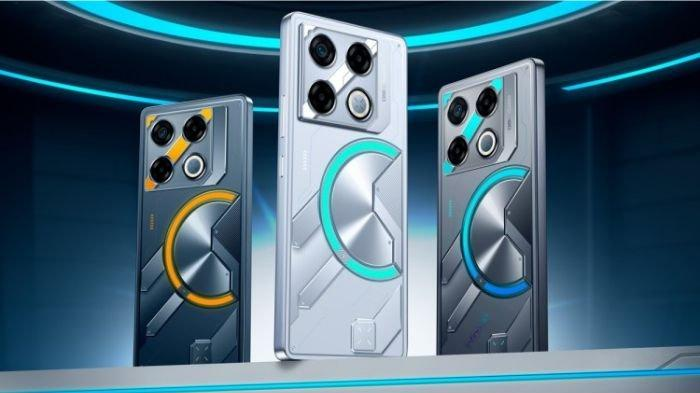
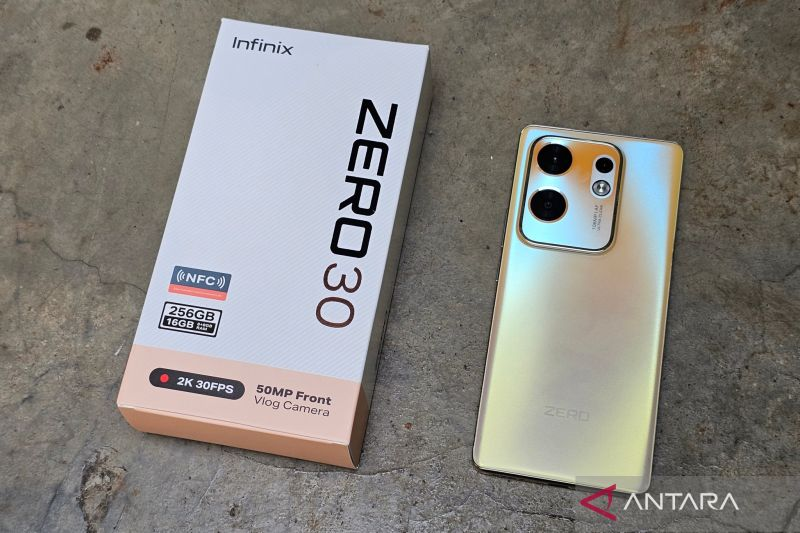

Daftar Artikel Terbaru
Infinix GT 20 Pro – Performa Gaming Maksimal dengan Desain Futuristik
Infinix GT 20 Pro hadir untuk gamer sejati dengan performa tinggi yang ditenagai oleh chipset Dimensity 8200 Ultimate dan GPU Mali-G610. Layar AMOLED 120Hz memberikan pengalaman visual super halus, sementara sistem pendingin canggih menjaga suhu tetap stabil saat bermain game berat. Dengan RAM 12GB dan fitur Game Turbo AI, ponsel ini mampu memberikan pengalaman gaming yang responsif dan stabil. Desain bodi bergaya mecha futuristik membuatnya tampil menonjol di kelasnya. Dukungan baterai 5000 mAh dengan fast charging 45W juga memastikan daya tahan optimal untuk sesi gaming panjang.
Infinix Zero 30 5G – Smartphone Flagship dengan Kamera 4K Selfie
Infinix Zero 30 5G menjadi sorotan dengan kemampuan kamera depannya yang bisa merekam video 4K 60fps — fitur yang jarang ditemui di kelas menengah. Chipset MediaTek Dimensity 8020 dan RAM 12GB menghadirkan performa cepat dan stabil. Layar AMOLED 144Hz memberikan pengalaman menonton dan bermain game yang luar biasa mulus. Desain tipis dengan lengkungan kaca 3D di sisi membuat tampilannya elegan dan modern. Ditenagai baterai 5000 mAh dan fast charging 68W, Zero 30 5G cocok untuk kreator konten maupun pengguna profesional.